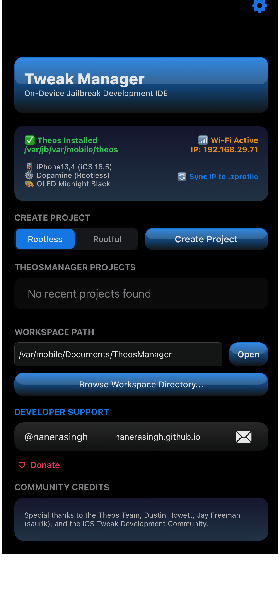
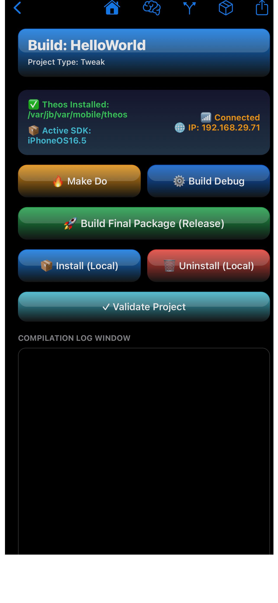

All-in-One GUI for Local Theos Workflow Management
TheosManager is an all-in-one GUI for managing Theos workflows locally on jailbroken devices. It automates repetitive setup steps like writing Makefiles, generating bundle resources, configuring Darwin notifications, and running build commands with real-time log tracking.


Tweak.x) templates with SpringBoard/app filter plists.main.m, AppDelegate, RootViewController, default application icons, and an embedded entitlements.plist.CCUIToggleModule bundles with aggregate makefile hierarchies and proper install destinations.RootListController, Root.plist).PSSwitchCell, PSSliderCell, PSLinkListCell, etc.) as well as third-party cells like Alderis Color Picker and Cephei.<PackageID>/Reload) and preference-reading code.make package via local subprocesses..deb locally via root execution, and performs a clean respring or uicache refresh..deb packages over local Wi-Fi to secondary test devices via scp/ssh..deb outputs directly to Sileo, Zebra, Filza, or AirDrop./var/jb, Dopamine) and legacy Rootful jailbreak environments on iOS 14 through iOS 16+./var/jb/opt/theos or /opt/theos), clang, make, ldid, dpkg-deb, sudo